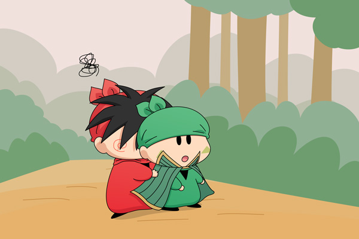

ヤシチ「ったく上着を着てこないなんて…。
長旅の修行で夜も冷えると言ったはずだぞ」
ハンゾー「兄貴が貸してくれると思って着てこなかったのら」
ヤシチ「ハンゾーに貸したら拙者が着る上着が無くなるではないか」
ハンゾー「大丈夫なのら。
兄貴は○○だから絶対に風邪は引かない…
…ってミルモが言ってたのら～(^^)」
ヤシチ「ミルモの奴め、余計なことを…。
こうなったら途中で風邪を引いて、
拙者が○○ではないことを証明してくれるっ！」
この後ヤシチは体を震わせながら寒さを我慢するものの、結局風邪を引くことなく、ミルモの言った通りになってしまいました。
なお、絵に登場していないサスケは風邪のため修行はお休みで、ハンゾーもこの後風邪を引いてしまいます。
第５回目のお題は「上着を貸す」。せっかくのお題なのに、男同士の絵になってしまいごめんなさい(^◇^;)。
妖精が上着を着るような設定が元々無かったので悩みましたが、ネズミがよく着ているアレを上着に見立ててみました。実際に描いてみると、ハンゾーには似合わないですね～。おそらくヤシチが着ても似合わないんじゃないかと思います。
ヤシチとハンゾーの組み合わせは今回初めて描きました。サスケがいないと、ハンゾーはヤシチにすごく甘えそうな感じがして、描いていて楽しかったです。
次回のお題は「密室に二人きり」です。
(2012/9/16)